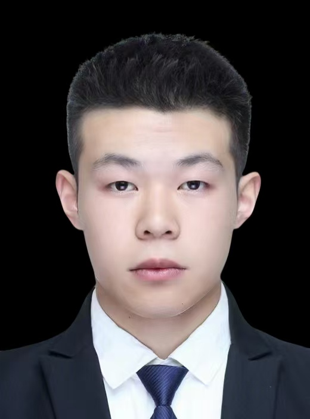

2003-02-21 | 男 | 中共党员
zhanghr@hdu.edu.cn | 178-8015-1269
杭州电子科技大学 | 硕士 控制科学与工程 | 2024.09-至今
方向：机器人环境感知与导航、轻量化深度学习、语义分割、点云处理
辽宁石油化工大学 | 学士 自动化 | 2020.09-2024.06
GPA 8.51/10 | 专业排名 1/170 | CET-6
SCI 一作录用
《DMRINet: A lightweight real-time semantic segmentation network for unstructured terrain segmentation tasks》
SCI期刊在投
《A Novel Terrain Semantic Map Building Framework for Field Robots》
中文核心在投
《一种面向非结构化室外场景的轻量级地貌语义感知方法》
• 研究生人工智能创新大赛 二等奖（队长）2025.09
开发融合大模型语义交互能力的智能服务机器人系统。负责 YOLO 行人感知、卡尔曼滤波轨迹优化、ROS 激光 SLAM 与多传感器融合导航，协作完成大模型 RAG-LLM 语义交互，实现机器人智能跟随与引导导航。
• 中国研究生机器人创新设计大赛 三等奖 2025.09
• 辽宁省大学生数学建模竞赛 一等奖（队长）2022.07
• 全国大学生数学建模竞赛 三等奖（队长）2022.09
• 全国大学生英语竞赛（NECCS）三等奖 2023.06
• 参与组织杭州电子科技大学第四届Robotics Challenge of HDU-ITMO 并获“优秀志愿者”
• 连续获得辽宁石油化工大学国家励志奖学金3次、优秀学生3次、杭州电子科技大学新生二等奖学金，研究生三等奖学金
运输机器人导航与规划技术研发
企业百万级项目 | 2023-2025
项目介绍：本项目旨在开发一套室内外复杂运维环境下大型运输车的定位与导航系统，包括：多传感器数据融合、高精度定位、雨雾环境下导航、路径规划与导航等。
主要负责：
• 熟练掌握机器人感知、导航、路径规划、点云处理与深度学习算法开发，具备完整项目工程落地能力。
• 编程语言与工具：熟悉C/C++编程、Python; 熟悉ROS开发，RViz 可视化、URDF 建模、Docker 镜像管理。
• 视觉与点云处理：熟悉OpenCV、PCL等开源库的使用、熟悉图像检测、特征提取、激光点云预处理、NDT/ICP 配准。
• 数据标注：熟练使用 Labelme 完成严格边缘语义标注，支持模型训练。
• 熟悉深度学习PyTorch框架、熟悉YOLO系列及语义分割网络，曾自主搭建、训练以及改进语义分割模型，完成机器人环境感知。
• 熟悉机器人常见传感器：单线/多线激光雷达、深度相机、IMU、RTK等，掌握内参标定与雷达相机联合标定。
• 熟悉 Cartographer、Gmapping、LIO-SAM 等建图算法；具备激光点云处理与建图框架部署经验。
• 硕士方向：复杂环境下机器人轻量化语义地图构建与自主导航，轻量化网络部署与2.5D高程地图构建。
• 大学英语六级 CET-6（474）：可熟练阅读英文文献、交流沟通。
• 通过全国计算机等级考试二级
Word：熟练使用Word 80%的功能。
Excel：精通函数公式、数据统计与可视化分析。
PowerPoint：曾在网站上做过多次PowerPoint模板，擅长美化PPT。
• 具备扎实的数学建模基础，熟练使用 Matlab、SPSS、Origin 完成数据分析、建模、仿真与可视化。
• 熟练使用 LaTeX 撰写学术论文，具备良好的科研写作与汇报展示能力。
• 掌握 STM32、Keil5 基础开发，具备电路焊接、程序调试、硬件调试能力。